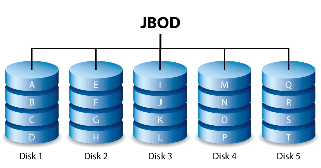

Language: C | Course: Intro to Systems Programming, PSU Spring 2025
A C executable that implements I/O functionality for a Just a Bunch Of Disks (JBOD) storage system. Handles reading and writing across disk and block boundaries, with an LRU cache layer to reduce redundant disk operations and network support for remote JBOD access.
